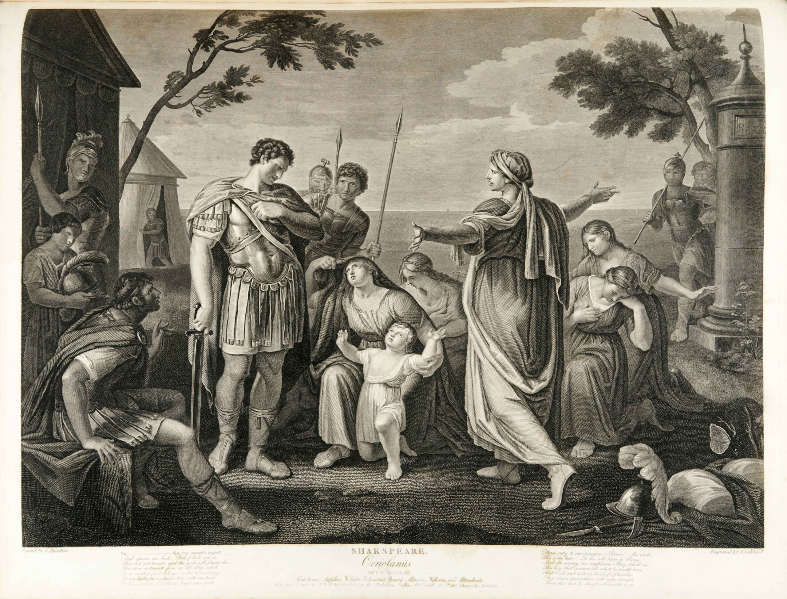

Julius Caesar: From Ambition to Immortality
Few figures in history have left a legacy as enduring and controversial as Gaius Julius Caesar. From humble beginnings to the apex of power, Caesar's life was a masterclass in ambition, strategy, and the cost of unbridled authority. Revered as a visionary leader and reviled as a tyrant, Caesar's story encapsulates the rise and fall of one of the most influential figures of ancient Rome.

The Early Years: Seeds of Greatness
Born in 100 BCE into the patrician Julian family, Caesar was part of a noble lineage with ties to the mythological goddess Venus. Despite his family’s waning influence in Roman politics, Caesar exhibited an extraordinary determination to restore their status. At just 16, Caesar faced his first major challenge: the death of his father. Left as the head of his household, he narrowly escaped political persecution under the dictator Sulla. His exile from Rome shaped his resilience and strategic thinking, traits that would define his career.
The First Steps to Power
Returning to Rome after Sulla’s death, Caesar embarked on a career in law and politics. His persuasive speeches and charismatic personality quickly won him the favor of the public. By 60 BCE, Caesar formed the First Triumvirate with Pompey the Great and Crassus, two of Rome’s most powerful figures. This political alliance allowed him to gain the consulship in 59 BCE, setting the stage for his meteoric rise.
The Conquest of Gaul: A General’s Masterpiece
Caesar’s military brilliance shone during his campaigns in Gaul (modern-day France). Over eight years, he expanded Roman territories, subdued rebellious tribes, and brought immense wealth to Rome. His victory at the Battle of Alesia in 52 BCE, where he encircled a larger Gallic force under Vercingetorix, showcased his unparalleled tactical genius. Caesar’s accounts of the Gallic Wars, written in his own words, not only documented his achievements but also served as propaganda to solidify his reputation in Rome.

Summarize or provide additional commentary here. Use images to complement the textual content and keep the reader engaged visually.
Dictator for Life: A Visionary or Tyrant?
With his enemies defeated, Caesar was declared dictator perpetuo (dictator for life) in 44 BCE. He initiated sweeping reforms:
- Created the Julian calendar, aligning time with the solar year.
- Reorganized debt and land ownership to benefit the poor.
- Expanded Roman citizenship to conquered peoples.